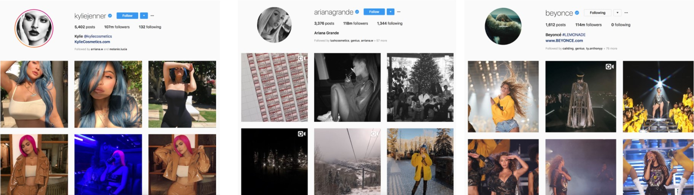
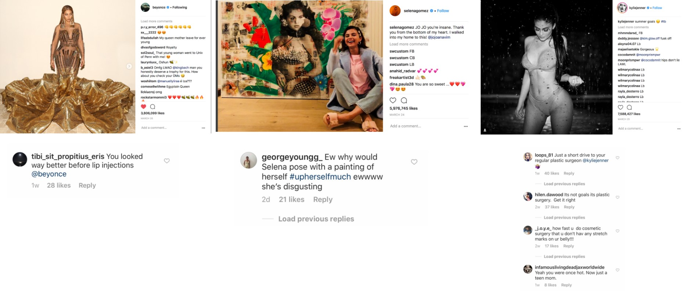
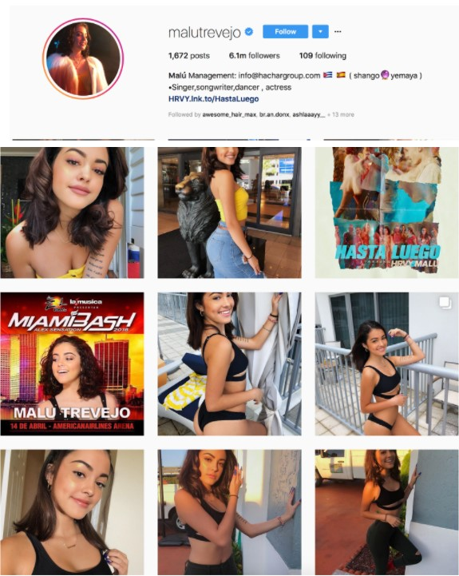

Instagram is one of the world’s biggest social media sites that is used on a daily basis by teens, adults, and even some children. As the era of technology grows, so does society’s love for popular culture. Social media is a tool used by countless public figures to share and interact with their audience. Instagram accounts of major celebrities usually obtain millions of followers of both males and females. However, not surprisingly, according to Pew Research in 2016, 38% of instagram users are women compared to 26% being male. The question remains why there are more females than males on Instagram. I believe a main factor that contributes to this difference is that Instagram allows women to create and view images of what is considered to be attractive in society. Due to the amount of popular figures sharing photos on instagram, the social media offers females a reliable source of what is deemed attractive.
In the last year, Instagram also released the top ten accounts with the most followers. Out of the ten accounts, all being world wide public icons and celebrities, seven were females. While it is true society’s views of beauty standard tends to lean to these women, instead of promoting self-love to their followers, they simply continue to post selfies. Below are some of the most popular instagram accounts with well over 100 million followers. These women are icons to thousands of young females world-wide, and all post images displaying the “perfect” body. However, none address that just because this is what their body looks like, doesn’t mean that their viewers must also strive to obtain that image. Many young women view these accounts on a daily basis, and effect of these images on their self-esteem are more harmful than beneficial.
A study completed by the School of Psychology at Flinders University in Australia found when undergraduate women were given “set of celebrity images, a set of equally attractive unknown peer images, or a control set of travel images”. After viewing the images, participants were given a survey, and it was found that “that exposure to celebrity and peer images increased negative mood and body dissatisfaction relative to travel images, with no significant difference between celebrity and peer images.” From personal experience I can tell you that these finding are without a doubt applicable to a wide range of women. When I go onto instagram, I find myself on the accounts of these celebrity women and even lower-profile public figures. These women are showered with thousands of comments, most of which complement their body image. Achieving the body of these women is not only sometimes unrealistic but often difficult, and not living up the standard can put women in an extremely harmful mental mindset.

I cannot place the blame of Instagram increasing low-self esteem in women solely on major instagram users. The comments that women can receive on their public profiles are often times positive, but there are also comments that are extremely detrimental to their mental state. For example, by simply strolling down a view comments of Selena Gomez Instagram post of herself and a self-portrait that her friend made for her, I found an abundance of hateful comments. While it is more common to find hateful comments on post that that heavily focused on the female body, this seemingly innocent post was attacked by a user who claimed, that Gomez was “disgusting” and “#upherselftoomuch” for merely showing her appreciation to a friend. If a young women were to see this comment they might be discouraged of posting pictures in fear of the backlash they receive. If a top celebrity is being scrutinized, what might people say about them?
Selena Gomez is not the only celebrity attacked for posting less controversial images. In a photo of her wearing a beautiful dress, one instagram user commented that Beyoncé’s lips looked “better before lip injections”. While it is uncertain whether this comment is true or false, Beyoncé is being attacked due to the size of her lips, which is not uncommon for black women. Black women everywhere are often judged for their naturally voluptuous lips, and a young women of color that sees this comment might think twice before posting a image of herself due to the in fear of people thinking she has had her lips medically enhanced.
The last celebrity figure I would like to touch on is Kylie Jenner. The new mom is known for her extremely makeup brand and famous family. Jenner often posts images showcases her unrealistic body. In one image of herself, in which she captioned “summer goal”, multiple users attacked the star. The mass amount of comments that accused Jenner of plastic surgery is substantial, and there are also comments that degrade her for being teen mother. Not only does her post showcase unrealistic body goals which can lead to low self-esteem in her young followers, but the comments degrading her as a mother imply that once a woman becomes a mother, she is viewed as less desirable. Low self-esteem in young women that view Instagram is not only the fault of accounts that post pictures, but the everyday users that comment as well.

Companies often use Instagram as an advertising platform to reach young audiences. While advertising a product is necessary and understandable, high profile accounts should be more conscious of the effects of their advertisements. A popular product that many Instagram accounts sponsor is weight loss supplements, in addition to makeup products, special vitamins, and other beauty related products. From Kylie Jenner to smaller “Instagram Models”, such as Scarlets Blade, you will often find some type of advertisement for beauty products on these accounts. Instead of promoting charities, nonprofit organizations ,and spreading awareness about important topics that affect the world today, popular Instagram accounts sponsor products that are aimed to transform viewers into societies desired body image. Not only are these products promoting weight loss but the people promoting it only care about one thing - the money they make off the sales! Instead of recommending a healthy weight loss plan, these accounts turn to dietary supplements that will really only solve the problem for a short amount of time and do not address that you must only pair the supplements with a healthy diet and exercise to see substantial results. It is accounts like these that young view everyday, that can lead to spiral of self-loath and inadequacy.
Many young women view popular Instagram users as role models, which can be a both positive and negative. Many female celebrities have accomplished amazing things in their careers. For example, Kylie Jenner has a successful beauty line. Selena Gomez and Beyoncé are world famous musicians. However, there are other smaller, yet significant role models on Instagram that are known for nothing more than their body image. Malu Trevejo is an example of a young girl that reached internet fame at the age of 14, with currently over 6 million followers. Her instagram accounts features her in photos and videos that highlight her physical features and can be deemed as inappropriate for her age. Would you allow your daughter to post the images she does? I know my parents would be completely disappointed in me if I was famous for only being a pretty face. The video below can be disturbing to watch for some. Trevejo posted a video oh herself dancing on Instagram November 18. 2017, and the video has reached over 3 million views. Not only does the video sexualize the young teenager, but she is posting for young women around the world to see. They are the ones that see all the attention that Trevejo receives, and one can only imagine the thoughts that run through their heads. Is this what we want our young women to strive for? Is this what we want our daughters and sons to see on their social media? Is this what we to promote as a society? The answer is up to you.

Instagram is undoubtedly one of the most destructive social medias today. Instagram is dominated by popular female celebrity accounts. The images these women post for their millions of follows display unrealistic beauty standards, that many young women glorify. Although the idea of an unrealistic body image has been around for decades, the problem arises in the fact that instead of using their fame to promote moral causes (such as female empowerment, helping the environment, donating to charities, becoming involved in politics, etc.) these Instagram famous celebrities merely reinforce female stereotypes. Instagram can possibly be a sensational tool to empower women, but instead society has used it for the opposite effect.
Sources
Ariana Grande. Instagram. https://www.instagram.com/arianagrande/?hl=en
Beyoncé. Instagram. https://www.instagram.com/beyonce/
Hartmans, Avery. “Here Are the 10 Most-Followed Instagram Accounts in 2017.” Business Insider, Business Insider, 29 Nov. 2017, www.businessinsider.com/instagram-top-10-people-2017-2017-11.
Kylie Jenner. “#ad using @fittea before my shoots is my favorite” Instagram, 28 April 2016, https://www.instagram.com/p/BEv4jEmHGqK/?hl=en
Malutrevejo. Instagram. https://www.instagram.com/malutrevejo/?hl=en
Selenagomez. Instagram. https://www.instagram.com/selenagomez/
Scarlet Blade. “Girls I’m letting the cat out the bag. I’ve been keeping my best flat tummy secret pretty quiet, but with @flattummyco giving me results like this, I’ve gotta let you in on it…” Instagram, 15 December 2017, https://www.instagram.com/p/Bcvfz5BBs6O/
Zoe Brown. "Attractive celebrity and peer images on instagram: Effect on Women’s mood and body image" Body image, Volume 19, 2016, 37-43
Greenwood, Shannon, et al. “Social Media Update 2016.” Pew Research Center: Internet, Science & Tech, 11 Nov. 2016, www.pewinternet.org/2016/11/11/social-media-update-2016/.